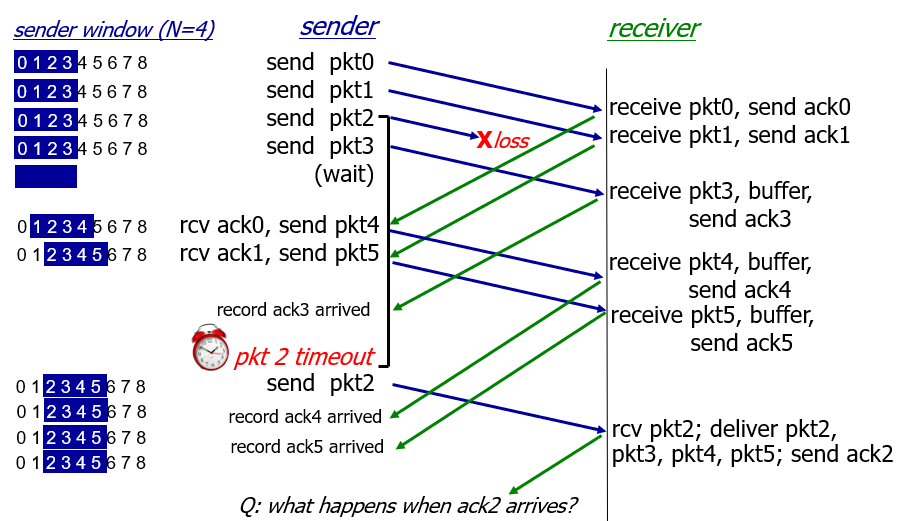
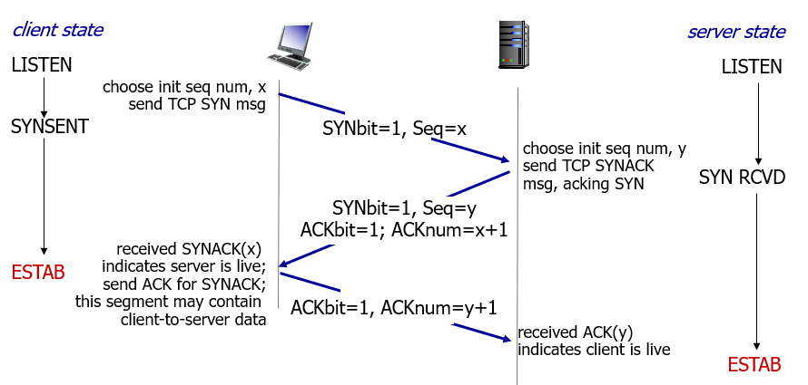

传输层概述
传输层是忽略了传输过程中的路由器，将两个设备之间的传输的过程抽象为这两个设备的直接传输（逻辑上的传输）。也因此，路由器是没有传输层（路由器不会主动、人为的传输数据）。
传输层中有两种协议：TCP 与 UDP。其中 TCP 是可靠传输协议，UDP 是不可靠传输协议。
Multiplexing & Demultiplexing
多路复用（Multiplexing）是指多个应用层应用使用传输层，使用同一个传输层模块时，传输层模块需要区分这写不同的应用层数据。反之，多路分解（Demultiplexing）是指将得到的报文转发给正确的应用层应用。

对于 UDP 协议，为了实现 Multiplexing 和 Demultiplexing，其协议中规定了需要有源端口号和目标端口号；对于 TCP 协议，规定了需要有源 IP 地址、源端口号、目标 IP 地址、目标端口号。
应用程序使用网络进行通讯时，系统提供了套接字这一抽象。上述也就表明如果使用的是 UDP 协议，那么套接字中使用的是端口进行多路复用与多路分解；如果使用的是 TCP，那么除了端口外还使用了 IP 地址。
端口
端口号（port number）相当于程序的进程号，对于同一套协议下（TCP/UDP）端口号必须不同。端口号的取值范围为 \((0,65535]\)，其中，\((0,1023]\) 分配给一些特定的服务用，剩余的 \([1024,65535]\) 为自由使用的端口号。
UDP 协议
UDP 协议（User Datagram Protocol）是一种无连接协议，不需要两端进行连接，每个数据包是独立处理的，传输层的包与应用层的包是一对一的关系。是一种 best effort 服务的协议，可能丢包、乱序。
应用场景：
- 流媒体传输
- DNS 服务器的数据传输
- SNMP（Simple Network Manange Protocol）简单网络管理协议
避免丢包：在应用层添加可靠机制
比特错误：在应用层进行错误检测和恢复机制
UDP 数据包的内容
其中有
- 8 字节的源端口
- 8 字节的目标端口
- 8 字节的长度，表示 整个包 的大小，单位字节。由于只用 8 个字节，整个包最长为 \(65535 - 8 = 65527\) 个字节
- 8 字节的校验码 checksum
- checksum 计算方式：将整个包按照 16 bit（2 字节）分组，并将每个 2 字节的部分看作无符号 16 位二进制数，将 包体 部分的数求和，如果有进位，那么进位加在最后，最后取反得到 checksum
UDP 协议传输的优点
- 无连接建立，速度快
- 简单，发送端和接收端没有连接状态
- 包头小，仅有 8 个字节
- 无拥塞控制，UDP 协议总是可以按照想要的速度发送
可靠连接协议
可靠连接协议（Reliable Data Transfer Protocol）是 TCP 协议的简化版，将 TCP 协议拆成若干个子问题进行探讨。
RDT
rdt1.0
在信道可靠的前提下，即网络层之下的所有层次都不会出现任何错误（理想情况），不会出现丢包和包的损坏，此时 sender 直接传输，receiver 直接接收。
rdt2.0
仅有比特错误的时候，接收端需要检测错误，检测之后不能直接修复，需要通知发送端重新发送。因此，接收端收到一个包后，如果没有检测出错误，需要向接收端发送一个 ACK 包，如果有错误，需要发送 NAK 包，以告诉发送端，接收端是否收到了正确的包。
如果只这样做仍有问题，无法保证 ACK/NAK 包没有比特错误。而此时如果简单的进行重新传输，那么就有可能导致接收端重复递交的问题。
rdt2.1
为了解决 rdt2.0 的问题，在 rdt2.0 的基础上，给每个包加一个序列号，如果 receiver 收到了两个序列号相同的包，则直接丢弃并返回 ACK。序列号可以只用两个来回交替使用。
rdt2.2
在 rdt2.1 的基础上，可以不需要 NAK 包，仅使用 ACK 包，但是在 ACK 的时候带上接收包的编号。对于 receiver 接收到的每个包，其都要发一个 ACK 包，而编号为最后一个向上递交的包的编号。这样在 sender 端，如果收到了两个相同编号的 ACK 包，就说明上一个发送的包出问题了，就需要重传当前包。
rdt3.0
同时考虑比特错误和丢包的情况，在 sender 端加一个倒计时的计时器，如果在计时器结束前收到了 ACK，结束计时并结束这次发送；如果在计时器结束为止都没有收到 ACK，不论是发过去包没收到还是对面的 ACK 没有收到，都重新发一遍这个包，并重新启动计时器。这个时间被称为 RTO（Retransmission TimeOut）。
rdt3.0 其实还是有一定的问题，一个包，编号为 1，在网络中延迟了很久才到，如果这个包到的时候，上一个包为 0，此时会将这个包传递给应用层，而在这之前以及重传过一次了，并且递交给应用层，这就会导致重复递交。
但是在一般情况下是不太会出问题的，但是由于采用的是 停等操作（stop and wait），导致效率低。
流水线协议
流水线协议（Pipeline Protocol）允许 sender 连续的发送信息，而不需要等待 receiver 发送的 ACK 包之后再发送下一个包。在高带宽、长距离的网络中，相较于停等协议（stop & wait）性能更高。这就要求包的编号必须是递增的，同时发送端接收端需要有 buffer。
流水线传输中有一个滑动窗口（windows），在窗口里面的包才能被发送，只有收到对应的 ACK 回复后将窗口向后移，然后发送下一个包。
GBN 协议仅需要 一个计时器，而 SR 协议需要为 每个发送的包 启动计时器。
GBN
GBN（Go-Back-N，回退 N 重传）协议中，ACK 包的编号是指 receiver 最后一个向上递交的包的编号。
在 sender：
- 窗口大小为 \(N\)，内包括了：已经发送了但是还没有接收到 ACK 的包，和准备发送的包
- 开启一个计时器，这个计时器是为窗口服务的，即对一个窗口开一个计时器
在 receiver：
- 没有额外的窗口
- 需要维护最后一个向上递交的包的编号
传输过程：
- sender 把窗口内的包依次发送，然后启动计时器，等待
- receiver 接收到一个包
- 如果这个包是第一个包，或者该包编号为最后一个向上递交的包的编号 + 1，那么接收这个包，并返回 ACK，其编号为该包的编号
- 反之，则把这个包丢弃，返回编号为向上递交的最后一个包的编号的 ACK
- sender 接收到了 ACK，编号为 \(x\)，此时说明编号小于等于 \(x\) 的包成功发送并接收，此时窗口向后移动到
\(x+1\)，重新启动计时器
- 因为 receiver 端发送 ACK 的机制，如果只收到了这一个 ACK，那么只有可能前面的 ACK 丢包，此时不需要管
- 如果当前窗口的计时器超时，那么将当前窗口内的所有包重新发送（Go-Back-N）
由于序列号总是有限的，所以需要考虑序列号的大小与窗口大小的关系。
在 GBN 协议下，序列号空间大小（S，seq# size）与窗口的大小（N，window size）有如下关系：
\[ S\ge N+1 \]
在 GBN 中，接收方只有一个接收窗口，其大小为 1（即接收方只能按顺序接收数据包，接收的帧必须是期望的下一个帧）。如果 \(S=N\)，在某些情况下可能会出现序列号冲突。例如，发送方重新发送的帧可能与未确认帧的序列号相同，接收方无法区分新旧帧。
SR
SR（Selective Repeat，选择重传）协议中对每个包，如果该包超时，才重传。因此，需要在接收端也要设置缓存窗口。同时，SR 中的 ACK 包的编号表示放入缓存的包的编号。
具体而言：
- sender 将窗口里的所有包发送，同时对每个包开一个计时器，然后等待
- receiver 收到一个包后，如果可以将缓存内的包直接递交（顺序收到），那么就递交，否则放入缓存中，同时发送该包编号的 ACK
- sender 收到了窗口中第一个包的 ACK，那么窗口向后移动直到窗口第一个包没有收到 ACK，同时按照顺序发送窗口中未被发送的包，同时为每个发送的包启动计时器；如果收到的 ACK 不是窗口第一个包的 ACK，那么记录该包被收到
- 如果 sender 端的某一个计时器超时，那么就重传这个包

在 SR 协议下，序列号空间大小（S，seq# size）与窗口的大小（N，window size）有如下关系：
\[ N\le {S\over 2} \]
在 GBN 中，接收方只有一个接收窗口，其大小为 1（即接收方只能按顺序接收数据包，接收的帧必须是期望的下一个帧）。如果 \(S=N\)，在某些情况下可能会出现序列号冲突。例如，发送方重新发送的帧可能与未确认帧的序列号相同，接收方无法区分新旧帧。
TCP 协议
TCP（Transmission Control Protocol）协议是一种可靠的传输协议，具有如下特性：
- one sender, one receiver: 只能一对一
- reliable, in-order byte stream: 数据包与应用层数据是多对多的关系
- piplined: 拥塞控制
- full duplex data: 全双工传输协议
- connection oriented：面向连接 handshaking=connection setup
- flow controlled: 流量控制
TCP 表现上更像 GBN 和 SR 的结合体。
TCP 协议包的包头部分，其中标志位的 ACK 表示这个包的 ACK# 是否有用，即这个包是否是一个 ACK 包；RST、SYN、FIN 标志用于建立连接和断开连接。
可靠传输
TCP 协议中先将发送的内容的字节进行编号，一个包的编号是发送的第一个字节的编号。序列号 sequence number 是指包的编号，也就是发送的第一个字节的编号；确认号 ACK number 是指期望收到的 seq#，
如果 receiver 收到了一个 seq# 不等于发出去的 ACK# 的包，那么会将这个包放在缓存窗口中，继续向 sender 端发送原来的 ACK# 的包，即 send duplicate ACK。
对于发出去的包，sender 同样会启动一个计时器，如果超时了，则会重传窗口的第一个包。与 GBN 类似，具有累计的 ACK 效应，即收到的一个 ACK 包表明其 ACK# 之前的字节全部被收到了，不管前面的 ACK 是否收到，都视作成功发送到，同时发送下一个包。
TCP 具有快速重传机制（Fast Retransmission），如果收到同一个 ACK# 的 ACK 包 3 次及以上，那么 sender 就会判定这个包丢失了，那么立刻重新发送这个包，并重置计时器。
连接
三度握手建立连接
客户端和服务端传输数据前需要建立连接，会发送三个特殊的包，用于传递初始序列号 ISN（Initial Sequence Number）和其他的网络参数，如窗口大小、最大发送的包的大小（MSS）
cli -> svr: SYN 包，其中符号位S=1, A=0，seq#=x，同时包含了客户端的网络参数（x 即为 ISN 是随机的数）svr -> cli: SYNACK 包，其中符号位S=1, A=1，seq#=y，ACK#=x+1，同样包含了服务器的网络参数cli -> svr: ACK 包，其中符号位S=0, A=1，seq#=x+1，ACK#=y+1，同时这个包可以传递有效数据
为什么需要三度握手：保证了可靠连接，保证了 buffer 不溢出（交换窗口大小和 receive window size），通知最大能够处理的包的大小（交换 MSS），交换 ISN（initial sequence number）
客户端和服务端的 SYN 包中的 seq num 为初始序列号，专门用于 SYN 包，第一个字节对应的编号为对应的 ISN+1，即第一个有数据的包的编号为 ISN+1。

四度挥手结束连接
为了结束连接，客户端与服务端之间会进行四度挥手，表明连接的结束。
cli -> svr: FIN 包，FINbit=1，seq#=xsvr -> cli: ACK 包，ACKbit=1，ACK#=x+1，服务器进程可以继续发送，客户端可以正常接受。svr -> cli: FIN 包，FINbit=1，seq#=ycli -> svr: ACK 包，ACKbit=1，ACK#=y+1
FIN 包不一定是由客户端先发送，也可能是服务端先发送。FIN 包的 seq# 为额外需要的序列号。FIN 代表单向结束，即发送 FIN 包后表明发送的该包的一方不会再发送数据过去，但是还能接收数据。
客户端发送了最后一个 FIN 包的 ACK 包后等待足够长的时间才会删除与这次连接相关的内容，为了防止最后一个 ACK 丢包，重发时已经没有任何连接。
拥塞控制
一段网络中的数据包过多，导致网络中丢包现象频繁。发送方发的太快，路由器没法及时处理。通过控制 sender 的窗口大小，对发送的速度进行调控，进而使得网络中的拥挤情况得到缓解。
sender 的窗口大小由接收方（receive window，buffer）和内存中记录的 cwnd（congestion window）中的较小值决定，而拥塞控制（Congestion Control）实际上就是控制 cwnd 的大小。
具体而言，传输会先经过慢启动（Slow Start）过程。在该过程中，cwnd 从 1 MSS 开始，翻倍增加，直到达到上限 ssthresh（Slow Start Threshold），之后进入拥塞避免阶段（Congestion Avoidance，CA）。该过程中每次发送后，cwnd 会增加 1，没有阈值。
在上述过程中，如果出现了丢包现象，则会立刻减速。丢包后会先重发直到收到全部的 ACK 才能发送下一个包，此时 ssthresh 设置成当前的 cwnd 的一半，cwnd 变为 1，重新开始。
另外，如果是通过快速重传判断的丢包现象，则 cwnd 不会变为 1，而是变为原来的一半，跳过慢启动阶段，但是 ssthresh 还是会改变。而在这一部分会发生一个叫做 Inflate cwnd 的部分。
这个过程也被称为 AIMD（Addition Increase, Multiplicative Decrease，加法增加乘法减少）原则，最大最小分配原则。